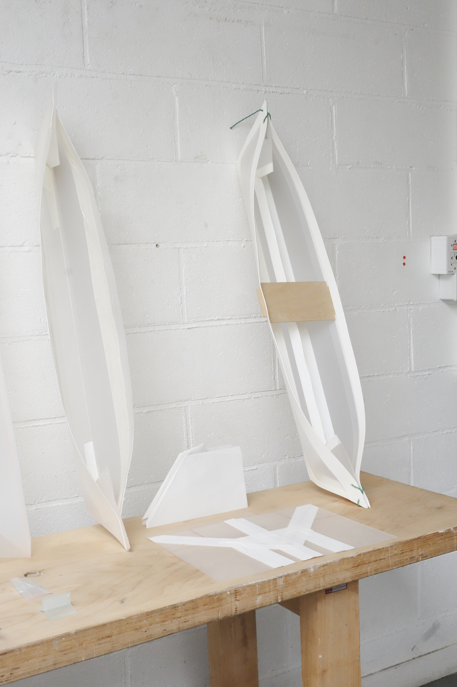
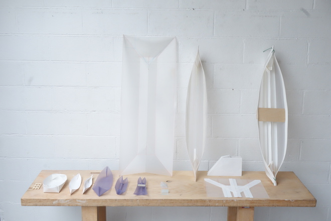
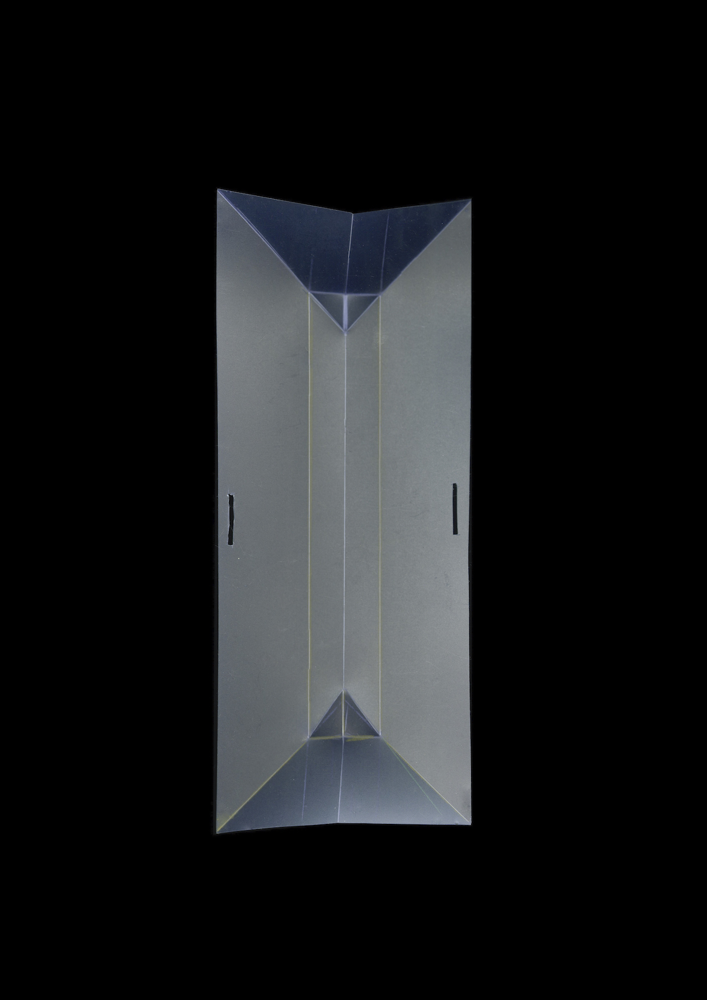
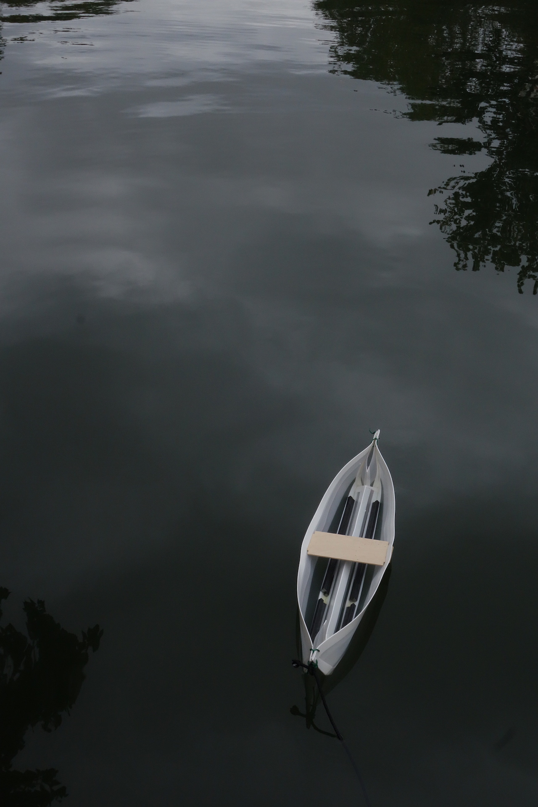

<!DOCTYPE html>
<html>
</html>

<head>
  <meta charset="UTF-8">
  <title>Juliette Collin</title>
  <meta name="viewport" content="width=device-width, initial-scale=1">
  <link rel="stylesheet" href="juliettecollin-projetsS9.css">

</head>

<body>
<section class="content-container ">

	<div class="content-orange">

		<a href="juliettecollin.html" class="header">Juliette Collin © 2020</a>

		<!--<a href="juliettecollin-contact.html" id="travaux">Travaux</a>
		<a href="juliettecollin-contact.html" id="experimentations">Expérimentations</a>-->
		<a href="juliettecollin-projetsS9-en.html" class="retour">Back</a>
		<a href="#abri" class="texte-projet">Abri 4x4<br>
			<em>2020</em><br>
            The A0 boat is a children's kayak project formed from a single sheet of polypropylene. The plate is pinched on each side, a board tightens both sides of the boat. When unfolded, the plate can be rolled, transported and stored in a car trunk.
        </a>
	</div>


	<div class="content-violet">

		<div class="flex-container-projet">

			<div>
            	          
            </div>

			<div>
 				
 			</div>

 			<div>
 				
 			</div>

 			<div>
 				
 			</div>
 		</div>        

	</div>
</section>  

</body>